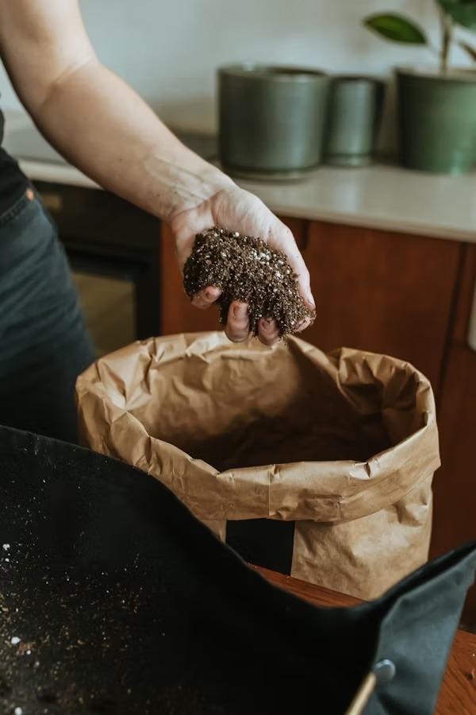

Quick Disease Detection
Upload a crop photo → Instantly know the disease & cure.
AI-powered accurate detection in seconds.

Fertilizer Recommendations
Get the right fertilizer suggestions for better yield.
Personalized guidance for soil health.
Farmer Guide
Step-by-step tutorials for new farmers.
Easy to follow crop-growing tips.

Nearby Shops
Find fertilizer shops with phone & location.
Trusted vendors at your fingertips.